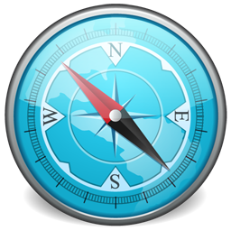
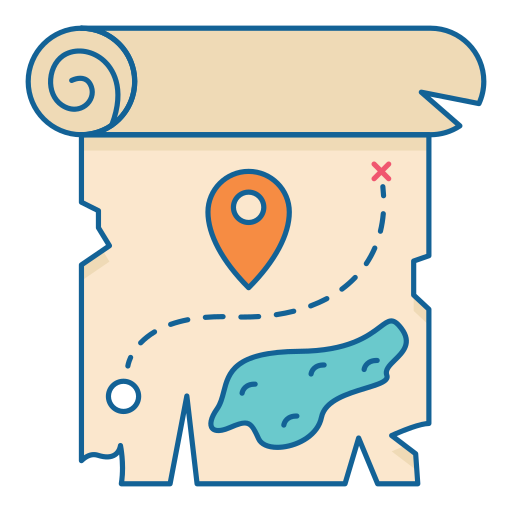
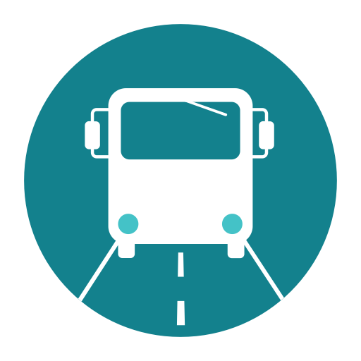

 Ubicación
Colonia Carlos Pellegrini se encuentra situada en el Centro Este de la Provincia de Corrientes, Argentina.
Distancias a C.C. Pellegrini
- Buenos Aires 683 km
- Córdoba 747 km
- Rosario 591 km
- Mendoza 1215 km
- San Miguel de Tucumán 816 km
- Mar del Plata 1050 km
- Salta 1180 km
- Neuquén 1836 km
- Puerto Madryn 2076 km
- Ushuaia 3860 km
 Diferentes Formas de Llegar
 En Micro/Bus
La terminal de micros más cercana es la de la ciudad de Mercedes. Esta localidad recibe micros de distintas ciudades, en su gran mayoria con destino a la ciudad de Corrientes, Posadas y Puerto Iguazú.
Desde Mercedes a C.C. Pellegrini
Desde Mercedes existe un transporte público en Combi, que lo realizan dos operadores.
En Auto
Tomar la ruta más conveniente desde su ciudad. Tener presente que los ultimos 80 km de la RP°40 son de tierra en buen estado. En caso de lluvias anteriores a la visita o mientras se realiza es conveniente esperar seque.
En Avión
Los aeropuertos más cercanos son el de Corrientes (Corrientes)y el de Resistencia (Chaco). Desde estos se puede alquilar un vehiculo o bien seguir la opcion de Micro/Bus mencionada con antelación.
 Otras Opciones
Otras Opciones
Es posible tambien llegar desde el norte, desde Posadas, la ruta es un tanto más extensa y de llover puede no ser conveniente. Tambien, si se animan, pueden hacerse los 120 km que separan Colonia Carlos Pellegrini de Mercedes en Bicicleta, tener presente llevar agua suficiente dado que en el camino no hay quien provea agua, ni ríos donde sea posible consumirla. Estas condiciones, más las altas temperaturas practicamente nublan la posibilidad de ir a píe, donde este recorrido tomaria entre 3 y 4 jornadas.